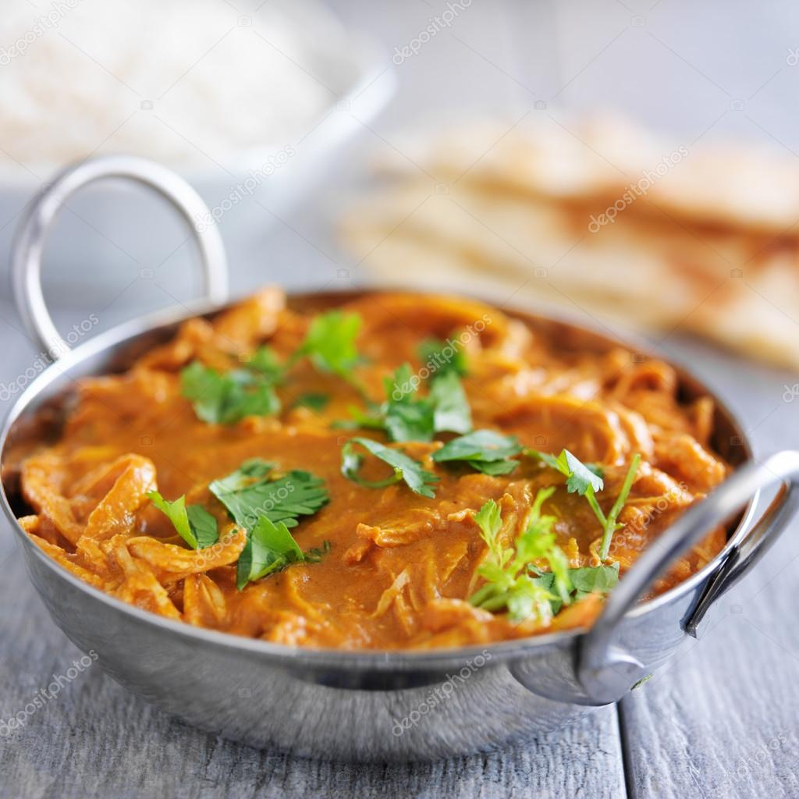

Chicken Tikka Masala

Description
Chicken Tikka Masala, dish consisting of marinated boneless chicken pieces that are traditionally cooked in a tandoor and then served in a subtly spiced tomato-cream sauce. It is a popular takeout dish in Britain and is a staple menu item in the curry houses of London, especially in the East End restaurants along Brick Lane, known as “Curry Mile.”
Ingredients list
- 1/2 cup plain yogurt
- 2 teaspoons garam masala
- 2 teaspoons paprika
- 1/2 teaspoon freshly ground black pepper
- 1/2 teaspoon salt
- 1/2 teaspoon cayenne pepper
- 1/2 teaspoon ground coriander
- 1 pound skinless, boneless chicken breast - cut into 1-inch strips
- 3 tablespoons vegetable oil
- 1 teaspoon cumin seeds
- 1 large onion, chopped
- 3 cloves garlic, minced
- 1 tablespoon grated fresh ginger
- 2 green chile peppers, minced
- 2 Roma tomatoes, diced
- 1/2 cup tomato paste
- 1/4 cup water
- 1 teaspoon garam masala
- 1/2 teaspoon ground coriander
- 1/2 teaspoon ground turmeric
- 1/2 cup heavy whipping cream
- 1/2 teaspoon salt, or to taste
- 1/2 bunch cilantro for garnish
Steps
- Step 1
Combine yogurt, 2 teaspoons garam masala, paprika, black pepper, 1/2 teaspoon salt, cayenne pepper, and 1/2 teaspoon coriander in a large bowl. Add chicken strips and toss to coat. Cover and marinate in the refrigerator for 2 hours.
- Step 2
Preheat oven to 450 degrees F (230 degrees C). Grease a baking sheet.
- Step 3
Place chicken strips on the prepared baking sheet, leaving space between each piece, and bake in the preheated oven until browned and no longer pink inside, about 10 minutes. Remove and set aside.
- Step 4
Heat vegetable oil in a large skillet over medium heat. Cook and stir cumin seeds until lightly toasted and aromatic, about 3 minutes. Add onion; cook and stir until onion begins to soften, 4 to 5 minutes. Stir in garlic, ginger, and green chiles and continue to cook until onion is browned, 15 to 20 minutes. Cook and stir tomatoes, tomato paste, and water into onion mixture until tomatoes begin to break down and incorporate into the onion mixture, about 10 minutes.
- Step 5
ook and stir 1 teaspoon garam masala, 1/2 teaspoon coriander, and turmeric into the tomato mixture. Mix in the cooked chicken, add cream, and stir to coat. Cover and let simmer for 10 minutes. Season with 1/2 teaspoon salt and garnish with cilantro.